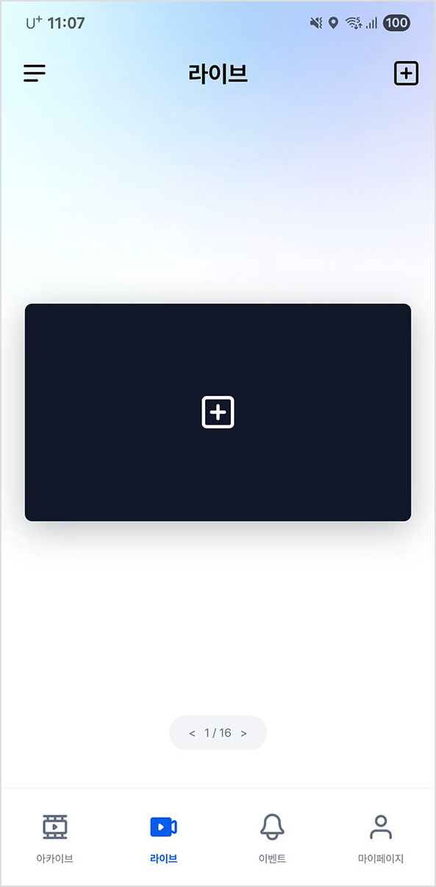
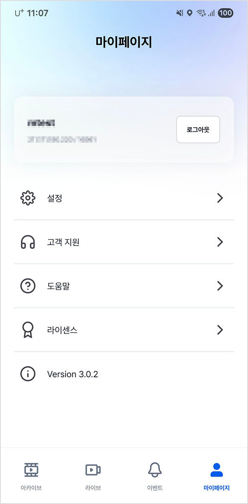
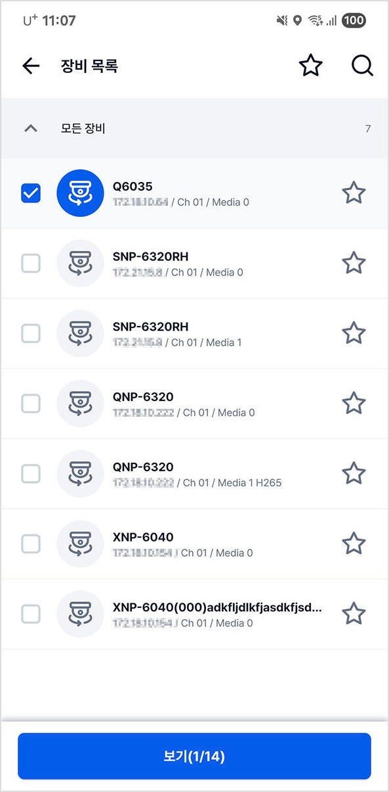
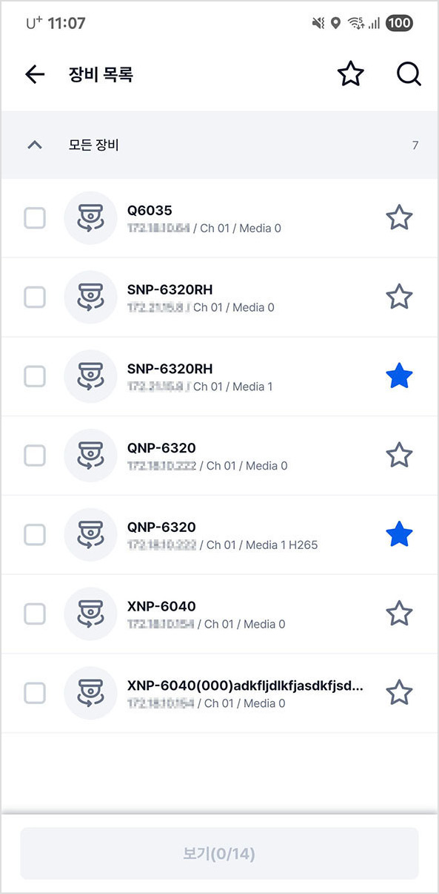

모바일 앱 설치하기
실제 화면과 설명서 이미지는 다를 수 있습니다.
모바일 앱
앱 설치 사양을 확인하고 앱을 설치합니다.
설치 사양 확인하기
원활한 앱 실행을 위해 설치 사양을 확인합니다.
|
지원 OS |
•Android 10 이상 지원 •iOS / iPadOS 14.0 이상 지원 |
|
지원 코덱 |
•H.264 지원 •H.265 지원 |
|
권장 VURIX 서버 버전 |
•1.8.0.250319 이상 권장 |
|
권장 웹 API 버전 |
•1.8.0.250618 이상 권장 |
|
|
|
•웹 API를 통해 연결되는 VURIX 모바일은 모바일 네트워크 환경에서 웹 API 서버 IP가 외부에서 접근 가능해야 합니다. •VURIX 모바일이 외부 네트워크에서 VURIX 서버와 통신하기 위한 포트포워딩 설정이 필요합니다. •RTSP 영상 스트리밍을 위한 추가 포트포워딩 설정이 필요합니다. |
앱 설치하기
모바일 앱을 설치합니다.
|
❶ |
❷ |
❸ |
1.[Play 스토어] 또는 [App Store]에서 "VURIX"를 검색하세요.
2.[설치]를 누르세요.
3.앱을 실행하세요.
|
|
|
•iOS 기기는 앱을 처음 실행해 영상 재생을 시도할 때 로컬 네트워크 알림 창을 표시합니다. •로컬 네트워크 '허용 안함'을 누르세요. 로컬 네트워크를 'OFF' 상태로 변경합니다. |
기본 작동하기
실제 화면과 설명서 이미지는 다를 수 있습니다.
로그인 및 로그아웃
앱에 로그인하거나 로그아웃합니다.
로그인하기
로그인 정보를 입력해 앱에 접속합니다.
|
 |
||
|
❶ |
❷ |
❸ |
1.로그인 정보를 입력하세요.
2.[로그인]을 누르세요.
3.앱에 접속합니다.
|
|
|
앱에 접속한 계정이 로그인 목록에 저장됩니다. |
다른 계정으로 로그인하기
다른 계정으로 앱에 접속합니다.
|
❶ |
❷ |
❸ |
1.로그인 화면에서 [다른 계정 사용하기]를 누르세요.
2.로그인 정보를 입력하세요.
3.[로그인]을 누르세요.
4.앱에 접속합니다.
|
|
|
[계정 삭제하기]를 누르세요. 로그인 목록에 저장된 계정을 삭제합니다. |
로그아웃하기
앱에서 로그아웃합니다.
|
 |
||
|
❶ |
❷ |
❸ |
1.메인 화면에서 []를 누르세요. 마이 페이지 화면을 표시합니다.
2.[로그아웃]을 누르세요.
3.[완료]를 누르세요.
4.앱에서 로그아웃합니다.
메인 화면
화면 및 영상을 확인합니다.
메인 화면 구성 보기
화면 구성을 확인합니다.
❶ 아카이브 (녹화 영상)
녹화 영상 화면으로 이동합니다.
❷ 라이브 (실시간 영상)
실시간 영상 화면으로 이동합니다.
❸ 이벤트
이벤트 화면으로 이동합니다.
❹ 마이 페이지 (설정)
설정 화면으로 이동합니다.
❺ 
실시간 영상 화면 레이아웃, 화면 잠금 모드 등 설정합니다.
(실시간 영상에서만 표시합니다.)
❻  (장비 목록)
(장비 목록)
장비 목록 화면으로 이동합니다.
❼ 영상 영역
영상을 표시합니다.
❽  (더 보기)
(더 보기)
컨트롤 모드, 검색, 장비 변경 및 삭제 등 메뉴를 표시합니다.
(기능에 따라 메뉴가 다릅니다.)
❾ 현재 페이지 / 전체 페이지 수
현재 화면 페이지 번호와 전체 페이지 수를 표시합니다.
영상 보기
영상을 셀에 추가해 확인합니다.
|
|
 |
|
|
❶ |
❷ |
❸ |

1.[ ]를 누르세요. 장비 목록 화면을 표시합니다.
]를 누르세요. 장비 목록 화면을 표시합니다.
2.원하는 항목을 선택한 후, [보기]를 누르세요.
3.영상을 확인합니다.
|
|
|
[보기] 버튼에 선택한 장비 개수와 할당 가능한 장비 개수를 표시합니다. |
장비 목록
장비 목록에서 장비를 확인하거나 장비를 검색합니다.
장비 목록 보기
장비 목록을 확인합니다.
|
|
||
|
❶ |
❷ |
❸ |
1.[ ]를 누르세요. 장비 목록 화면을 표시합니다.
]를 누르세요. 장비 목록 화면을 표시합니다.
2.장비 목록을 확인합니다.
3.원하는 항목을 누르세요.
•[]: 즐겨찾기 화면으로 이동합니다.
•[]: 장비 검색 화면으로 이동합니다.
장비 검색하기
장비를 검색합니다.
|
❶ |
❷ |
❸ |
1.[ ] > []를 누르세요. 장비 검색 화면을 표시합니다.
] > []를 누르세요. 장비 검색 화면을 표시합니다.
2.검색어를 입력하세요.
3.장비명 또는 서버로 장비를 검색합니다.
즐겨찾기
즐겨찾기에 장비를 저장하거나 삭제합니다.
즐겨찾기 보기
즐겨찾기를 확인합니다.
|
❶ |
❷ |
1.[ ] > []를 누르세요. 즐겨찾기 화면을 표시합니다.
] > []를 누르세요. 즐겨찾기 화면을 표시합니다.
2.즐겨찾기 목록을 확인합니다.
|
|
|
모바일 앱에서 저장한 즐겨찾기는 VURIX 클라이언트와 동기화되지 않습니다. |
즐겨찾기에 저장하기
장비를 즐겨찾기에 저장합니다.
|
 |
||
|
❶ |
❷ |
❸ |
1.[ ]를 누르세요. 장비 목록 화면을 표시합니다.
]를 누르세요. 장비 목록 화면을 표시합니다.
2.[]를 누르세요.
3.장비를 즐겨찾기에 저장합니다.
즐겨찾기에서 삭제하기
저장된 즐겨찾기를 삭제합니다.
|
❶ |
❷ |
❸ |
1.[ ]를 누르세요. 장비 목록 화면을 표시합니다.
]를 누르세요. 장비 목록 화면을 표시합니다.
2.[]를 누르세요.
3.장비를 즐겨찾기에서 삭제합니다.